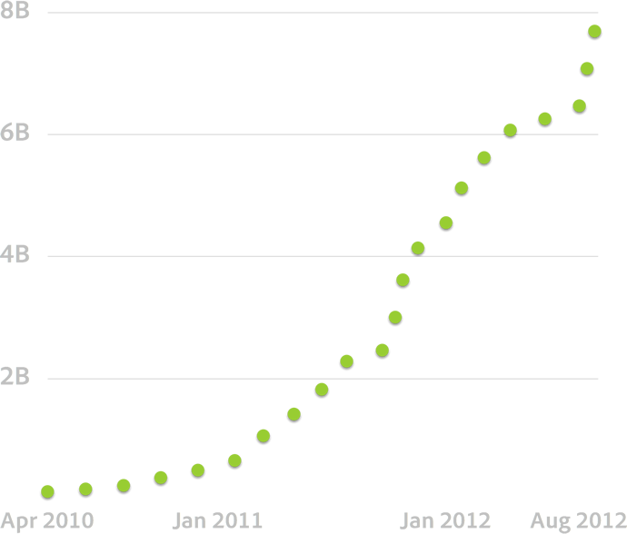

Edge Tools & Services
Web Fonts

Terry Ryan
Developer Evangelist
Who are you?
font-family: "Gill Sans", "Helvetica", "Arial", sans-serif;
This is Times New Roman
This is Times New Roman, too.
Even this is Times New Roman
How now Times New Roman
The web needs fonts
Webfonts to the rescue
Typekit
Use High-quality fonts on the Web.
websites
views

Adobe Edge Web Fonts
Get Started with Free Web Fonts
Source Sans Pro
The primary need for type in Adobe’s open source applications has thus far been for usage within user interfaces. A second environment of perennial interest to Adobe is the realm of text typography. Thus the immediate constraints on the design were to create a set of fonts that would be both legible in short UI labels, as well as being comfortable to read in longer passages of text on screen and in print. In thinking of typeface models that accomplish these tasks well, I was drawn to
Source Sans Pro
Open Source Font from Adobe
Source Code Pro
The primary need for type in Adobe’s open source applications has thus far been for usage within user interfaces. A second environment of perennial interest to Adobe is the realm of text typography. Thus the immediate constraints on the design were to create a set of fonts that would be both legible in short UI labels, as well as being comfortable to read in longer passages of text on screen and in print. In thinking of typeface models that accomplish these tasks well, I was drawn to
Source Code Pro
Open Source Monospace Coding Font from Adobe
NOPQRSTUVWXYZ
abcdefghijklm
nopqrstuvwxyz
1234567890
NOPQRSTUVWXYZ
abcdefghijklm
nopqrstuvwxyz
1234567890
NOPQRSTUVWXYZ
abcdefghijklm
nopqrstuvwxyz
1234567890
NOPQRSTUVWXYZ
abcdefghijklm
nopqrstuvwxyz
1234567890
Conclusions
We think you should use Web Fonts
Typekit
High Quality Fonts for the Web
Adobe Edge Web Fonts
Get Started with Free Web Fonts
Questions, Comments, Feedback?
Feel free to contact me:
- terry.ryan@adobe.com
- http://terrenceryan.com
- Twitter: @tpryan
- github: tpryan
Questions? #tpryan